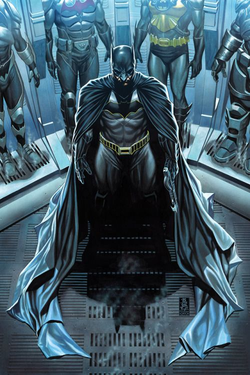

About Batman
Batman is the world's greatest detective. He wanders around Gotham city protecting and serving as he sees fit. Equipped with exclusive and high tech weapons and vehicles, the competition does not stand a chance.
Batman with his suits
Batman's Gadgets
- Batmobile

- Batarangs

- Grappling Gun